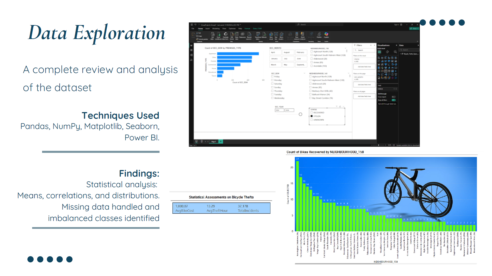

Bicycle Theft Predictive Analytsis
Overview
This project aimed to develop a predictive machine learning model to support bicycle theft reduction efforts in Toronto. By analyzing historical theft data, the team created a Logistic Regression classifier to predict the likelihood of a stolen bike being recovered. The pipeline involved data cleaning, transformation, feature selection, and model training with k-fold cross-validation to ensure robustness. The model achieved an impressive 98.8% accuracy and was deployed via a Flask API for stakeholder access, including law enforcement and city agencies.
Key Features
Feature & Data Preparation
The project was structured around Agile principles using Azure Boards to manage all development work across epics, features, user stories, and tasks. Each item was linked to branches, commits, and pull requests, ensuring traceability and clear development flow. This allowed for consistent progress tracking and real-time collaboration within the team.
Model Development & Evaluation
A Logistic Regression model was trained using an 80/20 train-test split and validated with 10-fold cross-validation, achieving an average accuracy of 97.94%. Despite strong overall performance, the model showed imbalance in correctly identifying recovered bikes, which was highlighted through the confusion matrix. Still, it served as a powerful proof of concept, with a clear need for further balancing strategies in future iterations.
Deployment & Use Case
To ensure real-world usability, the trained model was deployed through a Flask API. This allows predictions to be made dynamically via web requests, enabling integration with public portals or law enforcement dashboards. The solution empowers users with rapid insights into theft recovery probabilities, making it a valuable tool for urban security planning and community awareness.
Gallery

Tech Stack
| Layer | Stack |
|---|---|
| Data Processing | Python (Pandas, NumPy) |
| Data Visualization | Matplotlib (Pyplot), Microsoft Power BI |
| Feature Engineering | Scikit-learn (preprocessing, dummy encoding) |
| Modeling | Scikit-learn Logistic Regression, K-Fold Cross Validation |
| Evaluation | Confusion Matrix, Accuracy Metrics, Cross-Validation Scoring |
| Deployment | Flask (API endpoint for prediction) |
Collaborators
Aleli
Manuel
Nguyen